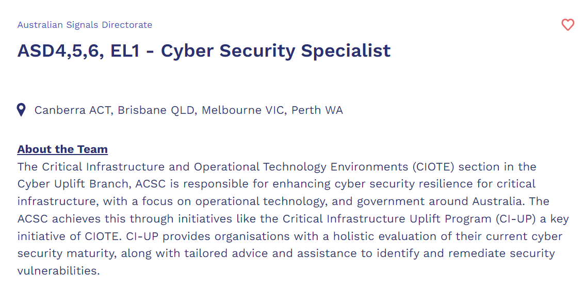

Personal Information
Hi! My name is Maritoni or you can also call me Toni. I am currently in my third year of university hoping to work in the IT industry. My nationality is Filipino and I can speak English and Tagalog. In my free time, I like to play video games, board games, go to the gym, play musical instruments and scroll on social media.
Interest in IT
My interest in IT started in Year 8 when I was heavily into PC games. Finding myself glued to the computer almost every day developed an interest in computers and information technology in general. At the moment, I am currently interested in Database Administration, System Administration and Cyber Security.
My cousin who currently works in the IT industry had an influence on me to pursue IT. Also, the fact that the future will be led by technology sparked my interest in IT as it will give me a stable career. Having my Year 10 work experience at REA Group in Richmond really did help me decide that working in IT is the career I want to work in.
RMIT is easy to get to for me as it is only a 35-minute train ride from the train station near my house. The Melbourne campus is surrounded by many good restaurants to eat at and right next to Melbourne Central which I can visit during long breaks between classes.
I am expecting to hopefully determine where I want to work in the IT industry, as it is very broad, and to also learn the skills that I need in order for me to get a job.
Ideal Job

The ideal job I would like to apply for is the Cyber Security Specialist role in the Australian Signals Directorate. Currently, I am interested to work in Cyber Security. Learning cryptography, networking and security in my current and previous courses sparked an interest in Cyber Security.
The skills and abilities required for this position are:
- Cloud security design and implementation
- Cyber and information security
- Network design and implementation
- Penetration testing
- Programming/scripting/software development
- Cyber Security assessments and auditing
- Cyber Security program management
- Systems administration
- Systems and software design
- Threat intelligence and modelling
- Web-based platforms
- Cyber security architecture
There are also eligibility requirements needed for this position. Such as:
- To be an Australian Citizen
- To take a medical assessment
- To undergo an Organisational Assessment
- Required to undergo the Security process
The current skills, qualifications and experience I currently have are:
- Successful completion of the following courses:
- User-Centred Design
- Introduction to Computer Systems and Platform technology
- Netwroking 1
- Workplace Communication
- Introduction to Programming
- Web Programming
- Database Concepts
- Netowrking 2
- Operating Systems Administration
- Software Engineering Fundamentals
- Programming 1
- Unix Essentials for System Administration
- Introduction to Engineering Mathematics
My current experiences are:
- Work experience with REA Group
The skills that I currently have are:
- Knowledge of computer hardware
- Proficient knowledge of Windows Operating System
- Adequate proficiency of programming languages such as HTML, CSS, Bash, SQL, JavaScript
- Great understanding of Microsoft Office software
- Attention to detail
- Excellent communication skills
- Works well in a team
I plan to acquire the skills that I need for this job by completing courses that relate to Cyber Security and to also complete my Bachelor’s degree. I also hope to get into a graduate program for a company after I graduate in order to get the skills and experience needed for the workforce.
Personal Profile

From the Myers-Briggs test, I am Adventurer (ISFP-T). This means I am more introverted than extroverted; this means I prefer fewer, yet deep and meaningful social interactions and drawn to calmer environments. I am more observant than intuitive, which means I am down-to-earth with a strong focus on what is happening around me or what might happen. I am a feeler more than a thinker meaning I am good at improvising or adapting and very flexible. I am more turbulent than assertive which means I am very self-conscious, sensitive to stress, a perfectionist and very eager to improve.
From a learning style test, I am more of a visual/tactile learner. I learn best by using methods that are primarily visual and like to see what I’m learning. Other than a visual learner, I am also a tactile learner. I learn best by touching, moving, building or drawing what I learn. I tend to learn best when there is some type of physical activity is involved.
From an enneagram test, I am a Type 2. This means I am empathetic, sincere and warm hearted. I am also friendly, generous and self-sacrificing but can also be sentimental, flattering and people-pleasing. Type 2’s are well-meaning and driven to be close to others, but can slip up into doing things for others in order to be or feel needed. At times, type 2’s has problems with possessiveness and with acknowledging their own needs. At a type 2’s best, they are unselfish and have unconditional love for others.
There are a few character traits that can work to the benefit of the team but also to its detriment. Adventurers have little to no issue interacting and being relatable to others as they tend to easily relate to other’s emotions and feelings, furthermore minimizing the risk of conflict within a group. Being categorized as an explorer indicates a predisposition to our creative side. We have the insight to craft, experiment and demonstrate tangibly new ideas that resonate with our team members. Although Adventurers are great creatives, traits regarding team meditation are lacking. It may prove difficult to work with rigidly structured regiments as the freedom to express oneself is a major priority. When situations become overwhelming, we tend to shut down but with a strong support system within the team guarantees an Adventurers’ efforts are always valuable.
When forming a team, I need to take into account to be more pro-active when contributing into the groupwork. A team filled with members who are patient and empathic work well with my personality as I tend to get stressed easily if I am under pressure.
Project Idea
A project idea I would like to innovate is a mobile application consisting of a shared calendar amongst a group of users. The features included in this calendar are inputs of their events, linking other calendars to the shared calendar and personalise it to their liking. In additional to the shared calendar, the application will also feature a section that gathers information of restaurants in the city or the area the user is located in. It will provide restaurant information such as location, menu, pricing, opening hours, and bookings. This application will be available to all iOS devices and Android devices for free.
The motivation behind this project idea is from many events that occurred to me and my friends. Entering adulthood made it hard for us to regularly meet and catchup while juggling with university and work whereas compared to high-school, it was easier for us to see each other. Also, not to be stereotypical, as women, we find it hard to decide on things, especially where or what to eat. Therefore, my project idea was to create a mobile application that enables us to share each other’s schedules to help us determine when we are all free to meet up and to also browse top or trending restaurants on the side to decide where we can eat and catch-up.
The application is similar to your average calendar application on your smartphone like adding events, tasks or reminders, importing and exporting calendars and staying organised. However, the project idea I have come up with have added features that makes it very unique. One of the features that this mobile application has is that the user is able to share their calendar with friends or family and vice versa. This feature allows the user and the group they shared the calendar with to easily find an available time and day to gather and catch up. It makes it much easier and more efficient to block out the time and days they are not available rather than typing it in a group chat or saying it in person and eventually forgetting about it. Another feature this product has is the ability for the user and their group to personalise the calendar however they like. Different types of groups of people have different aesthetics. We want to ensure this feature is in the mobile application as the user is free to customise their calendar to their liking with different themes and colours to create a sense of personalisation. An additional feature this mobile application has is a service that lists restaurants nearby the users location, trending places to eat, restaurants with specific cuisines and search restaurants. In addition to the services listed above, the user can look at the menu of the restaurant, read the reviews, make a booking and view the opening hours of the restaurant. This feature makes it easier for the user to plan ahead of time and find a place to eat.
The equipment needed for this project idea are a computer, an IDE that supports the development of mobile applications, a lot of money to offer the restaurants to be in the service and give commission. A team to help make this project idea come to life would be ideal.
The skills required for this knowledge of some programming languages such as Swift (specifically for iOS devices), C++ (for Android, Windows and iOS devices) or Java (specifically for Android devices). These skills can be learned through self-paced online courses, websites such as w3schools and/or through a IT university degree.
If the project is successful, I hope that it would help users and their group of friends to easily find a date and time where they are all available to meet up or catch up with each other. I hope that it would also find it easier for the user and their friends to find a restaurant where they can catch up and enjoy good food. The impact of this app would be efficient to those who have a busy schedule yet wants to make time to meet those who are dear to them while eating at good places.